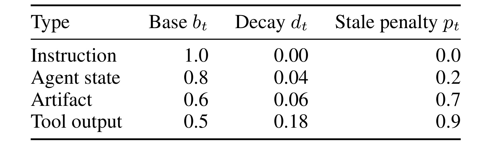
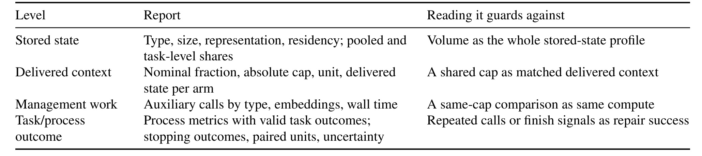
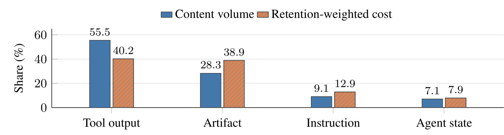
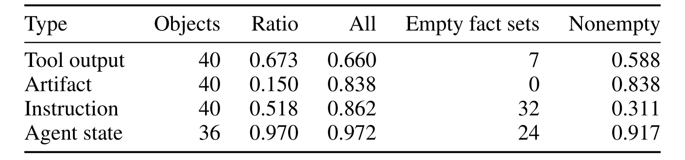
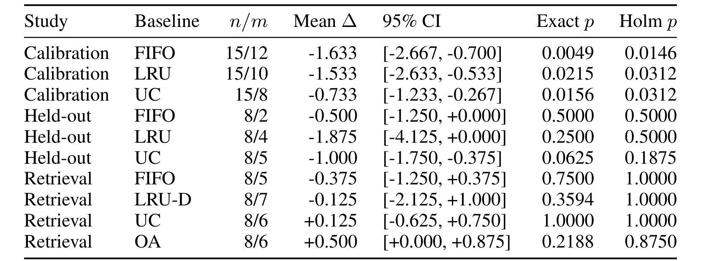
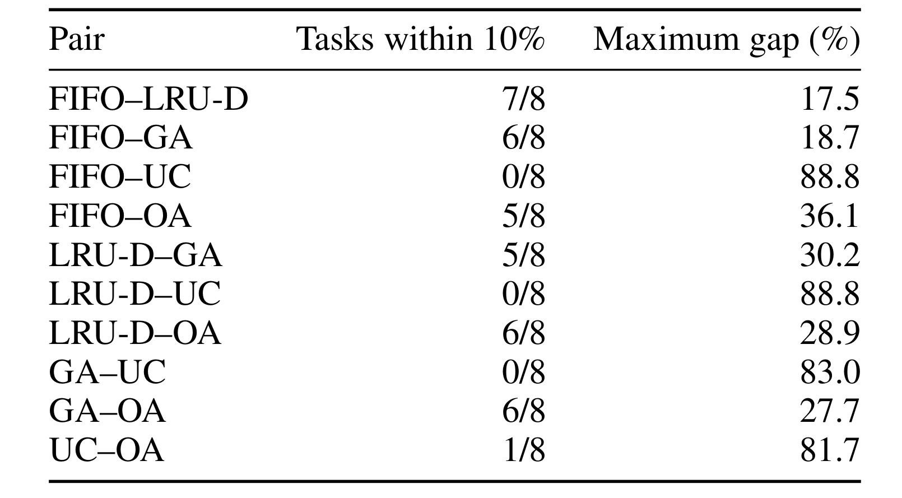
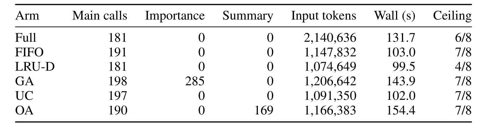
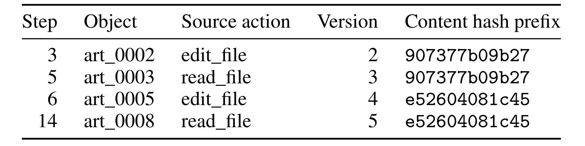

Measure Before You Manage：代码 Agent 工作记忆该如何先测量、再管理
这篇论文由 Le Chen、Zishen Wan、Baixi Sun 等人完成，一作主机构是阿贡国家实验室，合作机构包括哥伦比亚大学与休斯敦大学；论文作为 NeurIPS 2026 AgenticOS Workshop 稿件，于 2026 年 8 月 31 日公开。原文入口见 Measure Before You Manage: Evaluating Agent Working Memory in Coding Agents。作者研究的不是一种宣称全面胜出的新 memory policy，而是一个更基础的问题：面对代码 Agent 轨迹中的多种状态，什么才是可比较、可解释、可复现的管理证据。当前未核验到独立公开项目页或代码仓库；论文附录只给出工作归档中的证据定位，并明确不声称完整匿名公开发布。
代码 Agent 的工作记忆并不是可以用同一条 token 规则处理的均质池：指令、源码工件、工具输出与 Agent 自生成状态承担不同语义角色，也有不同的大小、驻留和表示行为。然而，若评测只对齐一个名义 token 上限，就无法判断结果来自更好的记忆策略、不同的实际交付上下文、额外的管理计算，还是不可靠的生命周期信号。
1. 背景和问题
长轨迹代码 Agent 会不断累积任务说明、源码视图、搜索结果、测试日志、命令输出、补丁状态与模型自己的文字。上下文窗口再大，也会遇到两类压力：一类是硬边界，完整状态无法进入某个服务的上下文限制；另一类是软成本，即每一步重复携带大量历史状态会增加输入、时延和潜在注意力干扰。因此，压缩、淘汰、指针化、摘要与检索都很自然。但过去不少比较把“记忆大小”压成一个 token 数，再比较任务结果，隐含假设是池内对象可互换、共享 cap 就等于交付给模型的信息相同、管理过程本身也没有额外代价。本文逐层拆开这些假设。
第一处异质性来自对象语义。Instructions 是受保护的系统或任务文本；artifacts 主要是源码视图，通常尺寸较大、会出现路径和版本关系；tool outputs 是测试、搜索、命令等执行反馈，数量多但大小和寿命差异很大；agent state 是模型生成文字，却不等同于已经验证的推理。把四者都看成“旧 token”会损失对象边界：同样 500 token，源码签名和一段过期测试日志在未来步骤中的作用、压缩方式与可恢复性完全不同。作者因此把 host 的 ordered message plan 解释为对类型化对象的引用，并记录对象 ID、大小、创建步、表示、路径、版本与依赖，而不是只保存最终 prompt 文本。
第二处问题是评价单位混杂。论文使用的样本并非一组可以简单相加的重复实验：对象刻画有 55 个任务轨迹，OA 开发校准有 15 个 SymPy 任务，OA 留出比较有 8 个来自五个仓库的任务，retrieval follow-up 有 24 个 SymPy 开发任务，但只有 8 个 block 完成全部六个策略臂，构成 48 个配对 cell。对象、轨迹、任务和 task-policy cell 分别回答不同问题。若把 1350 个对象当成 1350 个独立样本，或把未完成 block 中已经跑完的 arm 当作额外配对任务，置信度都会被夸大。
第三处问题是 outcome 的含义。主端点是 repeated tool calls：同一轨迹中，只要某次工具名及按 key 排序后的 JSON 参数与先前调用一致，就记一次重复。这个指标能反映过程是否反复，但一次 edit 后重新运行相同测试可能完全合理；相反，Agent 发出 finish signal 也不等于补丁真的修复了问题。早期样本虽然来自本地、无 Docker 的有限 evaluator，检查 FAIL_TO_PASS 与最多前 20 个 PASS_TO_PASS 测试，却不是官方 SWE-bench 得分；后期 48 个完整 cell 更没有有效正式 repair evaluation。因此，本文的统计结果至多支持“过程规则性发生差异”，不能偷换成“软件问题修复成功率提高”。
第四处问题是名义预算与真实系统边界不同。旧 sweep 使用的预算比例会被最小预算抬高，新的 retrieval study 虽让五个受限 arm 共享任务级 cap，却同时改变了对象优先级、表示阶梯与恢复机制。相同 cap 只约束可接受状态的上限，不保证每步实际 delivered context 相同，也不保证额外的 embedding、importance rating 或 summary 请求相同。论文最有价值之处，正是拒绝把这些差异压成单个“memory token budget”，而是追问：存了什么、真正交付了什么、管理付出了什么、最后又测到了什么。
这项工作的立场相当克制。作者不声称 OA 或 retrieval 全面优于 FIFO、LRU 或统一压缩；也不把开发集上较漂亮的差值包装成稳定泛化。相反，两种 semantically informed 策略更像压力测试：OA 暴露开发校准无法自动转移，GA 暴露 retrieval 的辅助计算和条件完成偏差。最终四层框架不是凭空提出的原则，而是从这些失败模式中抽出来的最低报告要求。
对推荐与搜索 Agent，这个问题也直接相关：用户约束、候选文档、工具反馈和模型状态同样不是可互换 token。本文没有在推荐任务上验证策略效果，但它给出了审计个性化记忆、检索上下文和辅助计算时可迁移的测量边界。
2. 方法
2.1 类型化对象、驻留成本与比较单元
作者先把工作记忆还原成对象级账本。对每条 characterization trajectory，按对象 ID 去重，排除 disk-only records，仅统计进入上下文的状态。对象 (o) 有记录代理 token 大小 (s_o)、创建步 (c_o)、首次淘汰步 (e_o) 与轨迹终点 (T)；未淘汰时把 (e_o) 视为 (T)。由此定义记录驻留区间、类别内容体量和驻留加权成本：
符号解释：(r_o) 是对象从创建到首次淘汰或轨迹结束的记录步数；(V_c) 对类别 (c) 内每个保留对象只计一次大小；(R_c) 进一步乘以驻留区间，因此大而长驻留的 artifact 会获得更高权重。这里的 token 来自早期 host 的 cl100k_base 代理计量，(R_c) 是 token-step 会计量，不是供应商账单、KV-cache 占用，也不证明对象在整个驻留期都有因果效用。相同内容但 ID 不同的记录不会再次去重，这一点同样限制“成本”解释。
这个对象模型的关键不是把 prompt 切成四份，而是同时保留类型、生命周期和表示层级。对象可处于 raw、compressed、summary 或 pointer 形态；pointer 仍能经 recall_object 恢复，所以 eviction 不等于永久删除。本文不训练新 memory model，(V_c) 与 (R_c) 只是归档统计，不能单独回答对象是否值得保留。
2.2 Object-Aware Compression：按类型改变表示
OA 是手工启发式策略，不是学习出的未来效用预测器。它把对象类型 (t)、subtype 倍数 (m_o)、记录访问年龄 (a_o)、访问计数 (k_o)、stale 标记 (z_o)、版本惩罚 (q_o) 和当前渲染大小合成两个分数：
符号解释：(b_t)、(d_t)、(p_t) 分别是类型的 base、decay 和 stale penalty；(a_o) 越大，时间衰减越强；(k_o) 的增益封顶于 5 次；(z_o) 表示记录陈旧；(q_o) 对版本落后的 artifact 取 0.25，否则取 1。指数衰减、subtype 权重、访问增益、stale 惩罚与版本惩罚在原式中相乘，所以任一强惩罚都可能显著降低对象效用。
符号解释：(s_o^{\mathrm{rendered}}) 是对象当前表示进入 message plan 的大小，(S_o) 是 OA 的优先分数。分母用平方根而非线性大小，意味着系统偏向单位渲染成本效用较高的对象，但不会让大对象受到完全线性的惩罚。每次最多四轮，将低分候选沿 raw、compressed、summary、pointer 逐级降级，instructions 和本步新建对象受保护。FIFO 按创建时间淘汰；旧 LRU 使用继承 access clock；UC 统一采用三步 age threshold 再 FIFO，却仍共享类型化结构 renderer，所以“uniform”只描述 decision rule，不代表 codec 与对象类型无关。

原文 Table C.1 让这套偏置变得可核查：instruction 的 base 为 1.0、decay 与 stale penalty 都为 0，而且它本身被 pin；agent state 依次是 0.8、0.04、0.2；artifact 是 0.6、0.06、0.7；tool output 是 0.5、0.18、0.9。也就是说，tool output 最容易随记录年龄与 stale 信号快速降权，artifact 对陈旧也很敏感，instruction 则不是一次“可淘汰指令”的实验。Subtype 还给 diagnosis 1.4、plan 1.2、patch 1.1、search 0.7、listing 0.4 等乘数。这些系数是受开发校准影响的设计选择，不是测得的因果效用；而 access clock 与 version signal 恰好存在实现缺陷，因此 OA 评分中的两个关键输入并不干净。
2.3 Retrieval 适配与四层评估框架
Retrieval follow-up 只改编 Generative Agents 的 recency、relevance、importance 三项，没有复制 reflection、planning 或社会模拟环境。对象分数是：
符号解释：(s) 是当前 Agent step，(\ell_o) 是 retrieval 自己维护的 admission clock，不会因自动 prompt inclusion 刷新；(e_o) 和 (e_q) 分别是对象与查询 embedding，查询由 issue text 与最新 agent state 拼成；(I_o) 是独立模型请求给出的 1 到 10 重要度，并在单次运行内缓存。波浪号表示在当前候选集做 min-max 归一化，常数分量映射为 0.5。Embedding 使用本地 BAAI/bge-small-en-v1.5，CPU float32、归一化向量；importance 请求沿用记录的 Agent 模型 alias，但 served revision 未固定。
六个 arm 是 uncapped full context、FIFO、LRU-D、GA、UC 与 OA。前三个受限 selector 共用 raw/pointer packer，LRU-D 只观察 READ、RETRIEVE、UPDATE demand；UC、OA 保留压缩阶梯且不选择当前已 evicted 对象。因此比较同时改变 score、representation 与 restoration，不是纯 score ablation。旧 sweep 的预算为：
符号解释：(f) 是名义比例，(P) 是同一 sweep 与任务的 full-context reference peak，(B_{\min}) 是下限。早期 wide sweep 的 6000-token floor 使全部 25% 与 50% 标签落到相同 absolute budget；后续使用 1200 floor，标签仍只是 sweep coordinate，不是独立压力等级。
Retrieval study 冻结任务级预算：
符号解释：(P_t) 是任务 (t) 的参考峰值，(F_t) 是 freeze procedure 使用的 floor statistic，五个 constrained arms 共享 (B_t)。24 个任务中 18 个 cap 被抬到名义 15% anchor 以上。为检查“同 cap 是否同交付”，作者再定义：
符号解释：(D_{t,a}) 是任务 (t)、策略 (a) 在各步 managed-state token 的中位数。只有一对策略在一个任务上的较大值不超过较小值 10%，才算该任务匹配；这不是 full API input 的相等检验，却足以审计 shared cap 是否真的产生相近 delivered state。

原文 Table 4 把证据分成四层：stored state 报类型、大小、表示、驻留与 pooled/task-level 份额；delivered context 报名义比例、absolute cap、计量单位和每 arm 实际交付；management work 报辅助调用、embedding 与 wall time；task/process outcome 报有效任务结果、停止、配对单位和不确定性。它依次防止把 volume 当完整画像、shared cap 当 matched context、同 cap 当同计算，以及把 repeated calls 或 finish signal 当 repair success。该框架是 Sections 3-5 的事后综合，可作报告模板，却不是预注册协议。
3. 实验结果
3.1 对象异质性：体量、驻留与压缩
55 条 SWE 轨迹来自 8 个仓库，排除 306 个 disk-only records 后保留 1350 个 in-context objects：585 个 tool outputs、165 个 artifacts、110 个 instructions、490 个 agent-state objects。Tool output 的 median size 只有 73 个代理 token，artifact 却是 624；平均记录驻留分别是 8.61 与 10.71 步。因此，只看对象总量会强调数量多的 tool output，加入驻留后，少而大的 artifact 权重明显上升。

Figure 1 的蓝柱是 pooled content volume，橙色斜线柱是 retention-weighted cost，各自有独立分母。Tool output 从体量 55.5% 降到驻留成本 40.2%，artifact 则从 28.3% 升到 38.9%，几乎追平 tool output；instruction 为 9.1% 与 12.9%，agent state 为 7.1% 与 7.9%。这不是说 artifact 比 tool output 更有用，而是说它更大、驻留更久，volume-only profile 会低估其状态负担。任务等权后 tool-output volume share 均值为 50.8%，与 pooled 55.5% 不冲突；任务 P10-P90 达 23.0%-78.1%，提示总体柱图不能代表“典型任务”。

Table B.4 来自 156 个 sampled objects、468 条 raw/compressed/pointer rows。Artifact 的 compressed/raw ratio 是 0.150，而 tool output 是 0.673，表明已实现的类型化结构规则对源码提取签名/imports 时压缩更激进，对执行输出保留更多诊断行。但它不证明 artifact 天生更可压缩，也不证明任务性能不变。Literal-string retention 的 All 列把空事实集记作 1：instruction 有 32/40 个空事实集，All 是 0.862，限制到 nonempty 后只有 0.311；agent state 也有 24/36 个空事实集。因而高 All 很大程度来自评价约定。表中最重要的结论不是某类型“安全可删”，而是压缩率与事实保持必须连同采样、事实提取规则和空集处理一起报告。
3.2 策略比较：开发收益为何没有转化为稳定结论
OA 先在任务内平均名义比例不超过 15% 的 cells，再与 FIFO、LRU、UC 配对。Calibration 有 15 个 SymPy 任务，held-out 有 8 个跨五仓库任务。精确双侧 signed-rank 删除零差并处理 tie，每个 split 内对三条比较做 Holm 校正；95% CI 来自 10000 次 task bootstrap，只描述任务变化。

Table 2 显示，calibration 中 OA-FIFO mean delta 为 -1.633 repeated calls，95% CI [-2.667,-0.700]，Holm p=0.0146；相对 LRU 与 UC 也通过该 split 的 Holm 校正。到了 held-out，OA-FIFO 只有 -0.500，8 个任务中仅 2 个非零差，Holm p=0.5000；OA-LRU 为 -1.875，但仅 4 个非零差，Holm p 同样 0.5000；OA-UC 的 bootstrap interval [-1.750,-0.375] 虽排除 0，exact p=0.0625、Holm p=0.1875，不能拿区间替代并非其反演的精确检验。结论应是“开发对比没有被这组留出证据确认”，而不是“证明过拟合”或“证明等价”。
Retrieval 的 24 个 development blocks 只有 8 个完成六臂：13 个被 greedy floor rule 停止，3 个因 OA 耗尽转换而停；77 条 started trajectories 中 61 条完成、16 条中断，只有 48 条进入配对分析。GA-FIFO mean delta 为 -0.375，95% CI [-1.250,0.375]，Holm p=1.0，其他对比也未通过校正。LRU-D 的均值还受 task 16281 上 7 次重复调用影响，而 OA 只有 task 11870 的 2 次为非零。每 task-arm 仅一次运行，停止也不等于修复失败。
3.3 同预算为何不等于同一交付上下文
旧 sweep 使用 cl100k_base 代理计量，新 adapter 用冻结 Qwen tokenizer 计 joined message plan；两者都不是完整 provider request。Cap 只约束上限，策略仍会因 packer、表示阶梯与候选集实际装入不同数量。作者据此用 (D_{t,a}) 做 10% 匹配诊断。

Table E.2 穷举五个 capped arms 的十对组合，没有任何一对在全部八个 complete tasks 上满足 10% 匹配。最接近的是 FIFO-LRU-D，7/8 个任务匹配但最大差仍 17.5%；FIFO-GA 为 6/8，最大差 18.7%；FIFO-UC 与 LRU-D-UC 都是 0/8，最大差 88.8%；GA-UC 也为 0/8，最大差 83.0%。这意味着同一 task-specific cap 下的 repeated-call 对比同时夹带 delivered context 差异。诊断本身只看 managed state 中位数，不能证明 full API input 已匹配；但它足以否定“共享 cap 已自动控制输入”的强解释。
探索性 GB10 replay 中，一个任务的 unconstrained arm 达 37883 tokens，25 步有 6 步超过 32768 限制；constrained arms 均不超过 16643。这只证明服务可行性边界，不证明硬件内存优势，因为 replay 使用不同模型和少量 calibration tasks，且没有形成持续内存压力。
3.4 管理开销与 outcome 解释
辅助 LLM、embedding 或 summary 都是系统比较的一部分。作者因此分开统计主调用、importance、summary、input tokens、whole-run wall time 与 step ceiling。

在八个完整 blocks 中，GA 产生 285 次 importance calls，OA 产生 169 次 summary calls；CPU embedding 还未计入表中。GA 的 main calls 为 198、input 1,206,642、wall median 143.9 秒，FIFO 分别是 191、1,147,832、103.0 秒；GA-FIFO 的配对 whole-trajectory wall-time 差在八个任务上都为正，均值 +67.45 秒、median +43.47 秒。OA wall median 是 154.4 秒，最高但不能直接归因于 summary，因为运行路径和工具工作也改变。Full arm 输入 2,140,636，六个任务达到 step ceiling；ceiling 是“跑到 25 步”，不是“成功修复”。
3.5 生命周期信号缺陷与证据有效性
OA 把 version-derived stale 与 inherited access clock 当作效用特征，但保存轨迹显示 host 的信号语义并不可靠。在 sympy__sympy-19007 中，读取未变化源码也会创建新 disk artifact version；工具 read path 先创建版本化 artifact，再加入 context view。一次“版本更新”因此可能是渲染事件，而非语义内容变化。

Table F.1 中 step 3 的 art_0002 来自 edit_file、version 2、hash 前缀 907377b09b27；step 5 的 art_0003 来自 read_file、version 3，却保持同一 hash。Step 6 的 edit_file 产生 e52604081c45，step 14 的 read_file 又把相同 hash 推进到 version 5，并触发五个 tool-output invalidations。这个单例不能估计缺陷在 55 条轨迹中的发生率，却足以推翻“版本事件必然代表语义陈旧”的前提。另一个问题是自动 INCLUDE_IN_PROMPT 会刷新 last_access_step 与 access_count，连 pointer 也一样；旧 LRU 可能退化得接近 creation order，OA 的 age/reuse 也不再是纯 demand 信号。后来的 LRU-D 使用独立 demand observer，但不是修正 OA 后的对照实验，归档中没有 corrected-OA trajectories。
4. 总结
4.1 我的判断
本文真正贡献的是一套审计顺序。先以类型化对象看 stored state，再核查每个 arm 真正 delivered context，然后把 importance、summary、embedding 与 wall time 纳入 management work，最后才解释 task/process outcome。对代码 Agent 研究而言，这比再提出一个统一压缩阈值更重要：它让“token 省了多少”不再自动等价于“信息相同”“计算相同”或“修复更好”。尤其是 Table E.2 的十对比较和 Table F.1 的相同 hash 版本推进，让两种常见系统假设有了可操作的反证。
对工程复现，建议把对象账本设计成一等接口：对象 ID、语义类型、路径/版本、表示形态、创建/淘汰与 demand event 分开记录；provider prompt usage、managed-state token、辅助调用与服务端硬限制分别计量；策略比较至少做 task-level pairing、held-out assessment 和 stopping audit。推荐或搜索 Agent 也可迁移这套框架：用户约束、候选文档、工具返回、模型状态不能只按 age 统一淘汰，召回内容的实际交付量与检索/摘要开销也应分层报告。但本文没有做推荐任务，迁移价值仍是方法论启发，不是已验证线上效果。
4.2 局限与后续跟进
至少有六项限制。第一，样本小且 repository-clustered，retrieval 主分析只有八个完整 blocks、每 task-arm 一次。第二，后期没有有效正式 repair-success evaluator，repeated calls 只能表示过程规则性。第三，served model revision、完整请求、retry 与外部干预历史无法完全重建。第四，OA 的 access 与 version 信号存在缺陷，却没有 corrected-OA 重跑。第五，GA 比较同时改变 score、representation 与 restoration，不是机制消融。第六，论文未提供完整匿名公开原始轨迹与代码，附录自己在 reproducibility 和 open access checklist 中回答 No。
后续最值得做三件事。其一，在修复 version equality guard 和 demand-only clock 后，冻结策略参数，重新跑跨仓库 held-out 与官方 SWE-bench evaluator，区分 process 与 repair outcome。其二，为每个 task-arm 做多次模型重复，并把 complete、floor stop、mechanism exhaustion 作为显式 outcome，而不是只分析幸存 blocks。其三，设计真正的 controlled ablation：固定 candidate universe、representation ladder、restoration 和 actual delivered tokens，只替换 priority score；同时记录 embedding、KV、auxiliary LLM、wall time 与账单。若这些控制完成，四层框架才能从“发现比较不公平”推进到“识别哪一种语义管理机制在何种工作负载下有效”。
总的说，这篇论文没有证明某一种记忆策略胜出，却准确指出了为什么现有证据常常不足以证明胜出。对 Agent 系统，先测量并不是保守的附属步骤，而是让压缩、检索和淘汰结果可解释的前提。